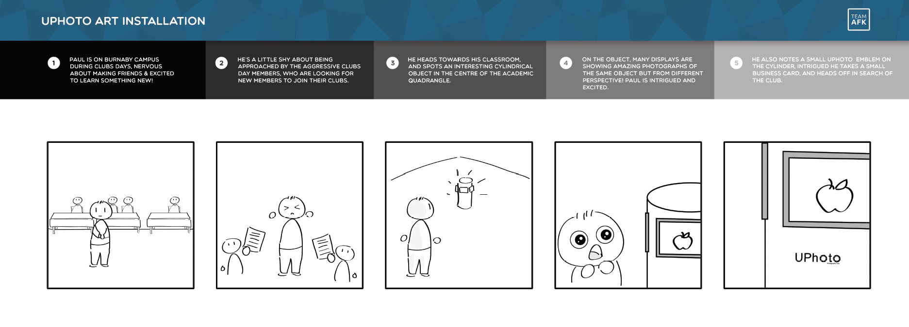
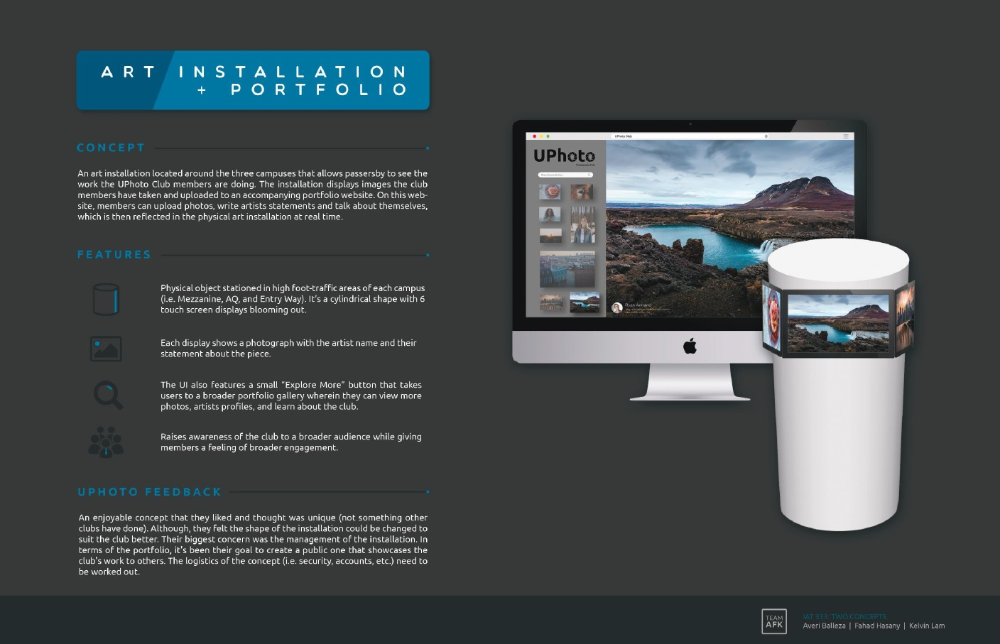
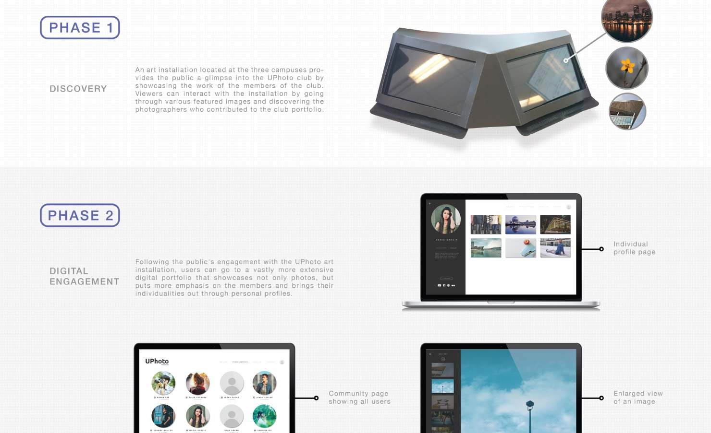

Designing a Solution for UPhoto Club
In the course Interaction Design Methods, we worked in a team of 3 to design a solution for the Simon Fraser University UPhoto Club. Through observation and interviews, we found that the club had issues with keeping a consistent number of active members, and creating a schedule for events.
Process
We worked with the club over the span of an entire term learning more about the club and getting their feedback on our ideas. My group had three potential solutions which we proposed and narrowed down into one after extensive feedback and iteration. The final idea was to create an art installation that would help UPhoto garner more attention and hopefully increase their numbers. My role throughout the project consisted mainly of ideating, copywriting, and storyboarding.
For the final stages of the project, I was in charge of building the installation and creating the final scenario video. I decided to redesign the form of the installation to one that focused on functionality. It allowed for easier access to the touch screens that displayed photos from the UPhoto online portfolio website.
